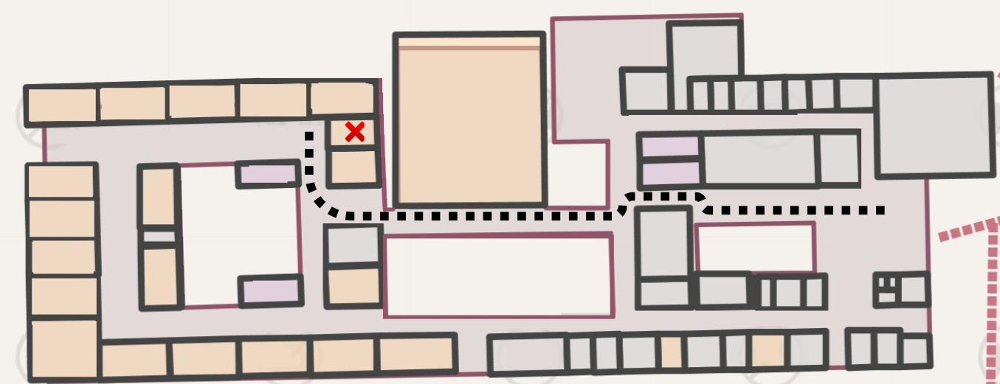

COAPAC
A Coordenação de Apoio Acadêmico (Coapac), setor vinculado à Diretoria Acadêmica, é responsável por oferecer apoio a professores e alunos, oferecendo suporte para o bom desenvolvimento de aulas e atividades acadêmicas.
opa

A Coordenação de Apoio Acadêmico (Coapac), setor vinculado à Diretoria Acadêmica, é responsável por oferecer apoio a professores e alunos, oferecendo suporte para o bom desenvolvimento de aulas e atividades acadêmicas.
opa